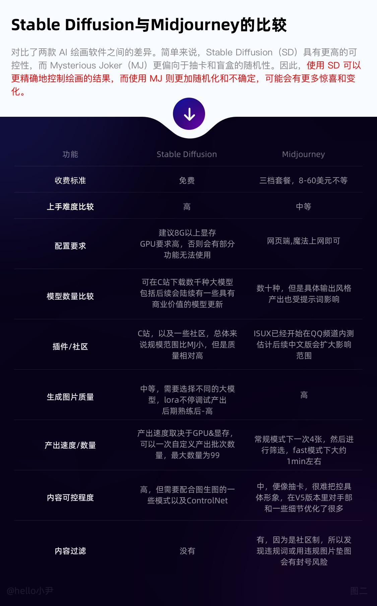
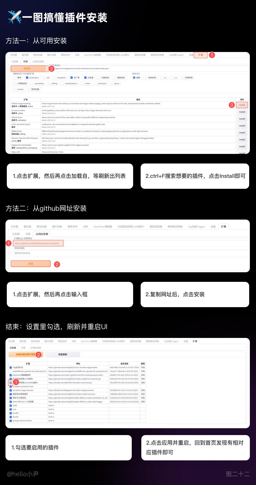
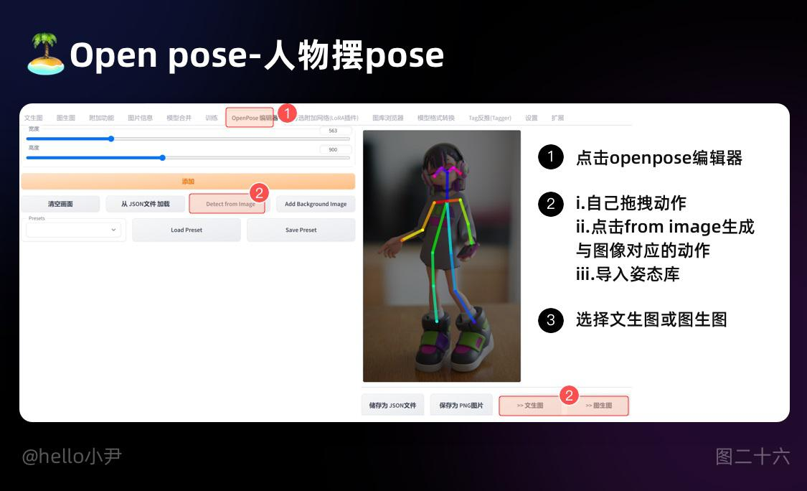

Stable Diffusion完整入门指南¶
Stable Diffusion 的基本介绍
Stable Diffusion和 Midjourney 区别

为了更方便的理解我们将 Stable Diffusion 与 Midjourney 做一个对比
一、基础介绍¶
1. 提示词：
提示词分为两个部分
正向提示词：
生成图像时，我们可以使用正向提示词来指定想要生成的图像。正向提示词可以是脑子里想到的图片或一句话，将其拆分成不同的关键词，并用逗号隔开作为输入。
需要注意的是，相同的指令在不同的模型库和参数下，生成的输出图像可能会不一样。此外，提示词的顺序也非常重要，因为它们的顺序会影响到生成图像的权重。通常情况下，越靠前的提示词权重越大，越靠后的提示词权重越小。
排除词：
输入框内输入的标签内容就是你画面中不想要出现的东西，如：低质量的，缺手指，五官不齐等等
下图给大家做一个案例演示
提示词拆分：
①对于使用提示词生成图像生成的小伙伴来说，当看到喜欢的图像或脑海中想到很多画面，但却不知道如何用提示词准确描述，现在有三种方法可以帮助大家快速拆分和生成图像。
Stable Diffusion 中自带反推功能，可以通过将想要拆分的图像拖入反推，点击按钮来获得生成该图像的提示词。第一次使用可能会有些慢，需要稍等片刻。需要注意的是，这些提示词需要进行后期的优化，常用的方法是通过百度翻译后进行增删改，或者输入到 GPT 中进行优化，优化后将提示词放入相应的框内进行图像输出。
②第二种方法我们可以借助三方网站：开源机器学习平台Replicate
来进行拆分，拆分好后，同第一条一样，进行一个增删改，然后我们对两种方法进行比较，通过比较后，我们可以进行词汇的筛选与合并
③利用 gpt 或文心等相关工具，将想要描述的长句输入，最后加一句描述，请将这句话拆分为 Stable Diffusion 的提示词，如果不满意可以继续恢复优化提示词，或者换一批相关描述，然后将转换好的提示词同 ①一样增删改
2. 符号的使用
正如前文所述，词汇在提示中的位置越靠前，其所占的权重就越大。为了进一步调整提示关键词的权重，我们可以通过以下语法来设置关键词的权重：在选中关键词的同时，按下键盘上的 Ctrl+⬆️ ⬇️来快速调整权重。每次调整的权重值为0.1，建议将权重值控制在0.7-1.4之间。简单来说，将每个提示词看作一个独立的个体，权重默认为1，而后面的数值就相当于在修改这个默认值。当然，我们也可以将权重调整为负数，从而在提示中产生与原意相反的影响。
通过这种方法，我们可以更加精确地控制提示关键词的权重，以达到更好的提示效果。同时，我们也需要注意保持提示内容的流畅性和自然性，避免过度的修改导致提示内容的语义不连贯或不符合实际情况。
3. 图像的输出
画面的信息量取决于输出图片的大小。在全身构图中，一些细节，例如脸部、饰品和复杂的纹样，只有在较大的图像中才能得到充分的展示空间，如图像太小，脸部，手部，一些细节就会被压缩成一团，无法得到充分的表现，以下图的风景为例，当画幅越大时，展示的内容越多。
二、界面部分¶
1. 采样迭代步数
输出画面需要的步数，每一次采样步数都是在上一次的迭代步骤基础上绘制生成一个新的图片，一般来说采样迭代步数保持在 18-30 左右即可，低的采样步数会导致画面计算不完整，高的采样步数仅在细节处进行优化，对比输出速度得不偿失。
2. 采样方法的介绍
常用的有三种，分别是 Euler a，DPM++2S a Karras 和 DDI
Euler a：
①Euler a 是一种用于控制时间步长大小的可调参数，在 Stable Diffusion 中采用 Euler 时间步长采样方法。适当的 Euler a 值能够捕捉到细节和纹理，但如果值太大会导致过度拟合，生成图像出现噪点等不良效果。
②一句话概括：采样生成速度最快，但是如果说在高细节图增加采样步数时，会产生不可控突变（如人物脸扭曲，细节扭曲等）
适合：ICON，二次元图像，小场景
下图为大家展示同提示词不同步幅
DPM++2S a Karras：
①采用 DPM++2S a Karras 采样方法生成高质量图像，该方法在每个时间步长中执行多次操作，同等分辨率下细节会更多，比如可以在小图下塞进全身，代价是采样速度更慢
②适合：写实人像，复杂场景刻画
下图展示 elura a 同提示词不同步幅下的输出图像，可以看到步幅越高，细节刻画越好
DDIM
①DDIM 采样方法可以快速生成高质量的图像，相比其他采样方法具有更高的效率，想尝试超高步数时可以使用，随着步数增加可以叠加细节
②适合：写实人像，复杂场景刻画
下图为大家展示 DDIM 同提示词不同步幅下的输出图像，可以看到随着步幅的提高，细节和丰富度逐渐提高
3. 提示词相关性
Stable Diffusion 中的提示词相关性指的是输入提示词对生成图像的影响程度。当我们提高提示词相关性时，生成的图像将更符合提示信息的样子；相反，如果提示词相关性较低，对应的权重也较小，则生成的图像会更加随机。因此，通过调整提示词相关性，可以引导模型生成更符合预期的样本，从而提高生成的样本质量。
①在具体应用中，对于人物类的提示词，一般将提示词相关性控制在 7-15 之间；
②而对于建筑等大场景类的提示词，一般控制在 3-7 左右。这样可以在一定程度上突出随机性，同时又不会影响生成图像的可视化效果。因此，提示词相关性可以帮助我们通过引导模型生成更符合预期的样本，从而提高生成的样本质量。
4. 随机种子
随机种子是一个可以锁定生成图像的初始状态的值。当使用相同的随机种子和其他参数，我们可以生成完全相同的图像。设置随机种子可以增加模型的可比性和可重复性，同时也可以用于调试和优化模型，以观察不同参数对图像的影响。
在 Stable Diffusion 中，常用的随机种子有-1 和其他数值。当输入-1 或点击旁边的骰子按钮时，生成的图像是完全随机的，没有任何规律可言。而当输入其他随机数值时，就相当于锁定了随机种子对画面的影响，这样每次生成的图像只会有微小的变化。因此，使用随机种子可以控制生成图像的变化程度，从而更好地探索模型的性能和参数的影响。
在工作产出中，如果细微调整，我们将会固定某个种子参数然后进行批量生成
三、模型部分¶
Checkpoint，VAE，embedding 和 lora 的使用详解
2. Checkpoint 的介绍
对于模型作者而言，训练模型通常指生成 Checkpoint 文件。这些文件包含了模型参数和优化器状态等信息，是训练过程中定期保存的状态快照。
对于使用者而言，可以将 Checkpoint 文件理解为一种风格滤镜，例如油画、漫画、写实风等。通过选择对应的 Checkpoint 文件，您可以将 Stable Diffusion 模型生成的结果转换为您所选择的特定风格。需要注意的是，一些 Checkpoint 文件可能需要与特定的低码率编码器（如 Lora）配合使用，以获得更好的效果。
在下载 Checkpoint 文件时，您可以查看相应的模型简介，通常作者会提供相应的文件和说明事项，以帮助您更好地使用和理解该文件。
总之，Checkpoint 文件是 Stable Diffusion 模型训练过程中定期保存的状态快照，使用者可以将其理解为一种风格滤镜，用于将模型输出结果转换为特定的风格。在使用 Checkpoint 文件时，需要注意文件的匹配和相应的使用说明。
3. VAE 的介绍
可以将 VAE 理解为对模型的滤镜加微调，不同的 VAE 可能有一些细节上的差异，但不会影响输出的效果。
它可以增强模型的表现，有些模型文件已经自带了 VAE 效果，因此不需要盲目地去挂载，可以选择自动模式来简化日常使用。
4. embedding 的介绍
如果你有做过 UI 的经验，那么你应该知道组件的概念。在 Stable Diffusion 中，embedding 技术就可以被理解为一种组件，它可以将输入数据转换成向量表示，方便模型进行处理和生成。
举个例子，如果我们想要生成一个开心的皮卡丘，通常需要输入很多描述词，如黄毛、老鼠、长耳朵、腮红等等。但是，如果引入皮卡丘的 embedding，我们只需要输入两个词：皮卡丘和开心。皮卡丘的 embedding 打包了所有皮卡丘的特征描述，这样我们就不用每次输入很多单词来控制生成的画面了。
在日常使用中，embedding 技术通常用于控制人物的动作和特征，或者生成特定的画风。相比于其他模型（如 LORA），embedding 的大小只有几十 KB，而不是几百兆或几 GB，除了还原度对比 lora 差一些但在存储和使用上更加方便。
总之，embedding 技术将输入数据转换为向量表示，为模型的处理和生成提供了便利。通过使用 embedding，我们可以更加轻松地生成符合预期的样本，而不需要手动输入大量的描述词汇。
5. LORA 的介绍
LORA 与 embedding 在本质上类似，因为携带着大量的训练数据，所以 LORA 对人物和细节特征的复刻更加细腻
使用技巧：
通常来说，每个 LORA 模型都有对应的底膜和触发词汇。我们可以查看 LORA 作者产出的相关图片，从中获取模型信息，并从中选择一些提示词和排除词来指定生成图像的方向。需要注意的是，每个 LORA 模型对输出图像的权重设置是非常重要的。权重设置越大，对画面的影响因素就越浅。通常情况下，权重应该控制在 0.7-1 之间。如果权重过高，会大幅度影响出图的质量。
为了获得最佳效果，我们可以根据不同的 LORA 模型选择适当的提示词和排除词，并在设置权重时进行调整。同时，我们还可以参考其他作者的经验和技巧，以便更好地利用 LORA 生成图像。
四、图生图¶
简介：
是一种生成图像的方法，它可以通过对已有的图像进行修改或变形，生成新的图像。在 Stable Diffusion 中，我们可以将垫图的图像看作是一张“初始图像”，通过多次迭代，对其进行修改和变形，逐步生成与垫图风格类似想要的图片。
需注意的是图生图相对于文生图多出两个功能
重绘幅度：
指的是每次迭代中图像被重新绘制的程度或幅度，也就是新生成的图像与上一次迭代生成的图像之间的差异程度。
它的取值范围在 0 到 1 之间。当 值等于 0 时，新生成的图像与上一次迭代生成的图像完全一致，即没有重新绘制；
当值等于 1 时，新生成的图像与上一次迭代生成的图像完全不同，即完全重新绘制。
需要注意的是，重绘幅度的大小会影响生成图像的质量和逼真程度。当重绘幅度较小时，生成的图像可能会比较模糊或粗糙；
当重绘幅度较大时，生成的图像可能会出现明显的噪点或瑕疵。
缩放模式：
拉伸：不改变宽高比的前提下将图片拉伸，宽度高度充满画面空间的 100%
裁剪：保留宽高比的基础上，然后裁剪掉超出去的部分,使用时我们可以提前调整好输出图片的宽高比例
填充：它指在缩放图像时，将原始图像放置在目标尺寸的中心位置，多出去的部分用一定的颜色值（通常为黑色）填充周围的空白区域。
直接缩放：
①指对图像进行简单的缩放处理，即直接将原始图像缩放到目标尺寸。
②在 Stable Diffusion 中，如果生成的图像尺寸与原始图像尺寸不一致，就需要进行缩放处理。直接缩放是一种简单粗暴的缩放方式，它直接将原始图像缩放到目标尺寸，不进行任何额外的处理。这种缩放方式的优点是简单快速，但缺点是可能会导致图像失真或模糊，特别是当缩放比例较大时。
1. 图生图
主要用来做图片放大和造型背景的变化，或者三次元改二次元时用的，通常配合着 ControlNet 来使用
2. 绘图
通过手动绘制或修改图像的局部区域，来指导生成器生成更加符合用户期望的图像，使用时可以利用绘图工具，如笔刷、橡皮擦等，对图像的局部区域进行修改。修改后的图像会被作为下一次迭代的初始图像，从而影响后续的图像生成过程。
通过绘图，可以更加精细地控制生成图像的细节和特征，从而获得更符合预期输出
3. 局部重绘
也称为上传蒙版法，提前在作图软件里用画笔涂抹好需要重新绘制的区域，黑色区域表示需要修复的区域，白色区域表示不需要修复的区域
(注意：因此只需要在需要修复的区域涂黑色，其他区域可以涂白或保留原始颜色。上传蒙版的话也只需在绘图软件里把需要修复的区域涂黑即可)
局部重绘的目的是尽可能地保留原始图像的结构和纹理特征，使修复后的图像更加自然和真实。
4. 批量处理
指使用已有的图像生成新的图像。而图生图的批量处理是指同时对多张输入图像进行图生图操作，生成对应的多张输出图像。
五、进阶篇：ControlNet 的使用¶
相关教程：
[__
Stable Diffusion进阶教程！超详细的 ControlNet 实用入门指南¶
ControlNet 的作用是通过添加额外控制条件，来引导 Stable Diffusion 按照创作者的创作思路生成图像，从而提升 AI 图像生成的可控性和精度。
阅读文章 >
](https://www.uisdc.com/controlnet)
1. ControlNet 基础知识
一图搞定插件安装

权重：
ControlNet 的权重与图生图权重的对比关系时
- 低重绘强度配高权重，可以锁定图片的细节，更改画风上的展现，拓展延伸推荐
- 高重回强度配低权重，修改图片细节，定风格图后小修改推荐
预处理器与模型的关系：
使用预处理器时要与模型一一对应起来,如与处理器选择 canny，则相对应的模型也要选择 canny
预处理器和模型在 Stable Diffusion 中是相辅相成的，预处理器通过对输入图像进行预处理和数据增强，为模型提供了更好的输入，而模型则通过对输入进行特征提取和生成高质量图像，为预处理器提供了更好的反馈
介入时机和退出时机：
介入时机：代表第几步介入对画面的影响退出时机：代表第几步退出对画面的影响
如，现在是一个生成步幅为 30 步的图像
现在介入时机为 0.2，则从 30x0.2=6，第六步的时候 ControlNet 开始介入
现在退出时机为 0.8，则从 30x0.8=24，第二十四步的时候 ControlNet 退出对输出的介入
2. Canny 边缘检测
Canny 是一种经典的边缘检测算法，能够很好地识别出图像中的边缘信息，对于图像生成任务来说，可以帮助模型更好地生成具有清晰边缘的图像
处理图片的方式是将图片专为线稿，对于画面细节不复杂的图像来说很好；但处理复杂图像时，主体会容易被除主题元素以外的元素影响
细节刻画上，一种是分辨率越高，线条越清晰；阈值越少，对应的细节也越多
3. Hed 边缘检测，细节保留
该算法的特点是能够同时预测多个尺度的边缘，从而提高了边缘检测的精度，对边缘清晰的图像生成效果更好
当用草图转上色时，可以在绘图软件将描边加粗加深一些，从而能更方便获取边缘
4. MLSD 线性检测
mlsd 模型，可以进行直线检测，通过分析图片的线条结构来构建出建筑外框，适合建筑设计的使用
可以配合 canny 一起使用，效果更佳
5. Open pose-人物摆 pose
判断主图的主体动作，然后将动作附加在主图上 一般配合着 open pose editer

6. LeRes 深度信息估算
对有场景深度的图片效果更佳，生成的图像景深更易区分
凡本网注明"来源：XXX "的文/图/视频等稿件，本网转载出于传递更多信息之目的，并不意味着赞同其观点或证实其内容的真实性。如涉及作品内容、版权和其它问题，请与本网联系，我们将在第一时间删除内容！
作者:
来源： https://www.uisdc.com/stable-diffusion-7